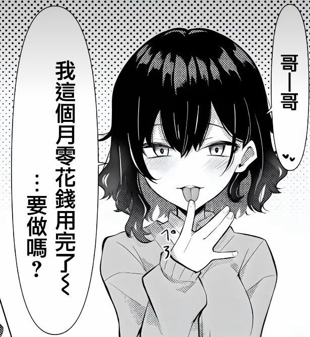

超涩气超绿茶的魔女公主-奏奏💚
@xuemingjiai
RT @meicai777: 最近真的好无聊好无聊～钱还都被主人提光了...哪也去不了，同时还欠下了一大笔债，消费自主权基本为零了💚
迎接我的生活真是惨淡无光 惨淡无光啊悲，只能请求“善良”的抖m哥哥们帮我回回血了，听人说可爱的孩子超有市场喔.....
哥哥姐姐们帮帮我嘛.…

小桃丝
@meicai777
最近真的好无聊好无聊～钱还都被主人提光了...哪也去不了，同时还欠下了一大笔债，消费自主权基本为零了💚
迎接我的生活真是惨淡无光 惨淡无光啊悲，只能请求“善良”的抖m哥哥们帮我回回血了，听人说可爱的孩子超有市场喔.....
哥哥姐姐们帮帮我嘛....拜托拜托💚（笑）
#贡奴 #atm奴 #压榨 #白给 https://t.co/AWsx3UlJOr